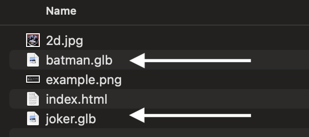

Setup
Embedding 3D models in your web projects has never been easier. With the <model-viewer> component, you can showcase interactive 3D content with just a few lines of HTML.
1. Add the Model Viewer Script
First, include the model-viewer script in your HTML document's <head> section:
<!-- Load model-viewer from unpkg -->
<script type="module"
src="https://unpkg.com/@google/model-viewer/dist/model-viewer.min.js">
</script>Note: The script must be loaded as a module, so the type="module" attribute is required.
2. Prepare Your 3D Model
Place your 3D model file (in .glb or .gltf format) in your project directory. Here's a typical project structure:
project-root/
├── index.html
├── assets/
│ └── models/
│ └── batman.glb # 3D model file
├── css/
│ └── styles.css
└── js/
└── main.js3. Embed Your 3D Model
Add the <model-viewer> element to your HTML with the path to your model:
<model-viewer
src="./models/batman.glb"
alt="Batman 3D model"
camera-controls
auto-rotate
interaction-prompt="click"
style="width: 100%; height: 400px;"
min-camera-orbit="auto auto 100%"
max-camera-orbit="auto auto 100%">
</model-viewer>Tip: For best results, serve your HTML from a web server (even locally) as some features may not work with direct file access.
Customization Options
The <model-viewer> component offers numerous attributes for customization:
<model-viewer
src="Batman.glb"
alt="Description for accessibility"
camera-controls
auto-rotate
auto-rotate-delay="1000"
ar
shadow-intensity="1"
exposure="1"
environment-image="/hdr/studio.hdr" <--- Using an .hdr for environmetal lighting
style="width: 100%; height: 500px;">
</model-viewer>